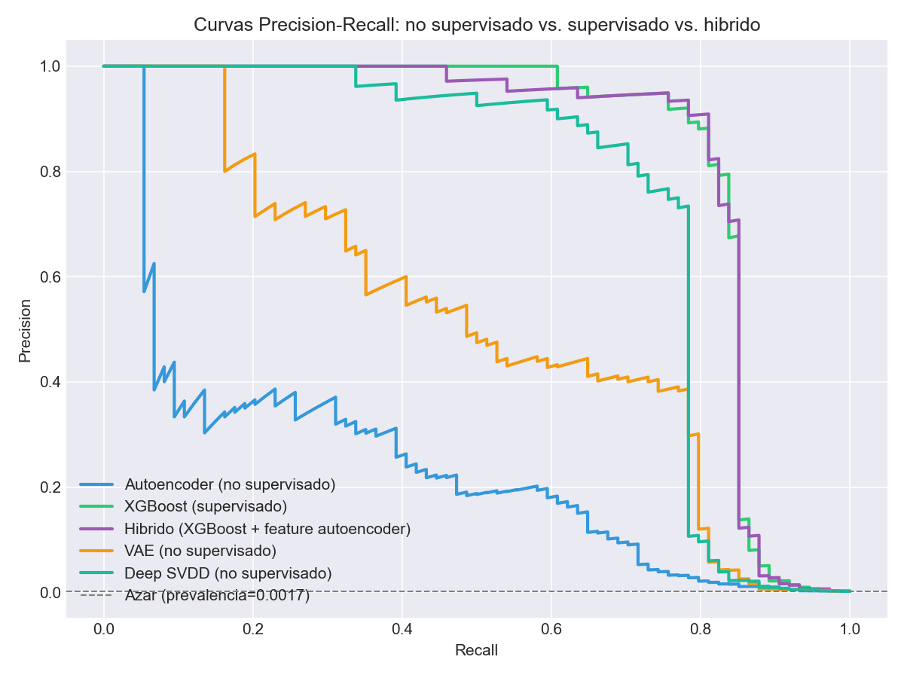
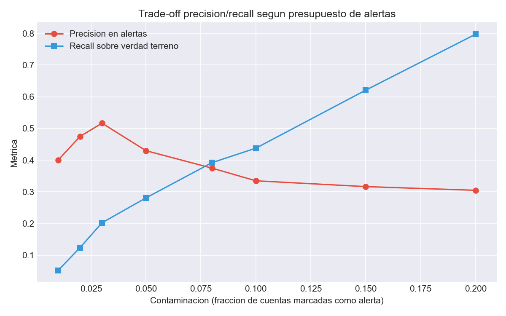
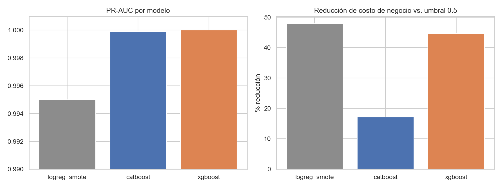

Four fraud/AML detection approaches in one lab, each isolating a different technique on a different data profile — real-world card fraud, real-time e-commerce, interbank AML typologies, and a direct autoencoder-vs-supervised comparison. Each folder is self-contained with its own README, dependencies, tests and figures.
This page shows the project's results. The methodology, the design decisions and the limitations are documented in the repository's README.
How much you lose without labels

How to read it. Five models on the identical held-out test set of the real ULB dataset. The dashed line at the bottom is chance (0.0017 prevalence). The three unsupervised models saw zero fraud labels during training — the realistic day-one scenario.
Why the top of the alert queue is not the best place to stop

How to read it. The x axis is the fraction of accounts flagged for review — the analyst team's capacity. Red is precision on those alerts, blue is recall against the injected UAF typologies.
Cost-calibrated decisions, not a 0.5 cutoff

How to read it — including a trap in the right-hand panel. On the left, PR-AUC for the three main models on a zoomed axis (0.990–1.000): they are effectively tied, which makes the ranking metric useless for choosing between them. On the right, the percentage by which threshold calibration cut the business cost relative to each model's *own* 0.5-threshold baseline.